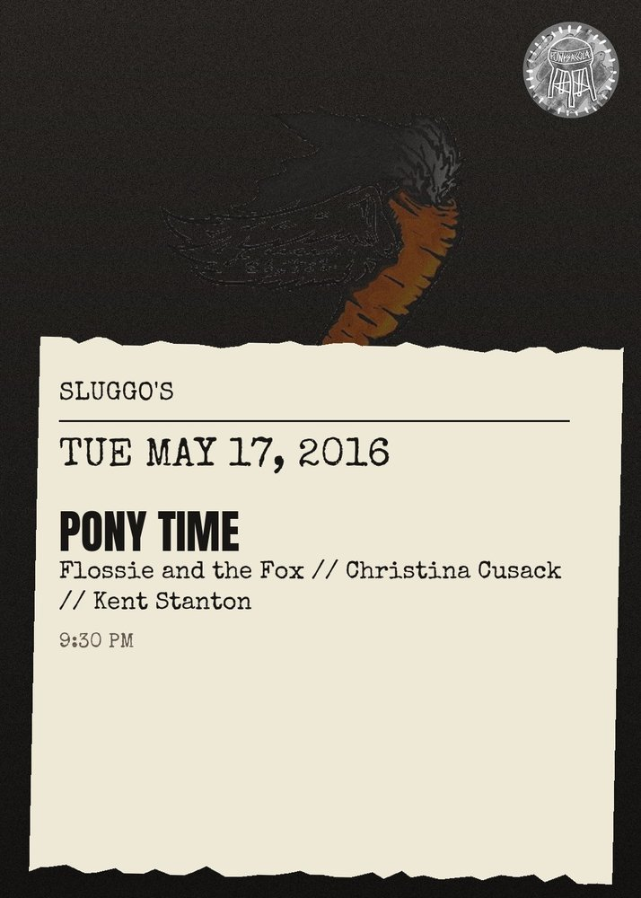

Pony Time, Flossie And The Fox, Christina Cusack, Kent Stanton
Tuesday May 17, 2016 | 9:30pm\n\nPony Time are a two-piece garage rock band from Seattle, WA consisting of two members: Luke Beetham on bass\/baritone guitar\/vocals and Stacy Peck on drums. The two met helping a mutual friend move a stereo back in 2009, and started playing their unique brand of danceable punk music together soon after, eventually leading to several nationwide tours and three full-length albums. Frontman Luke Beetham (also a guitarist in the British garage band Armitage Shanks) is locally renowned for his keen fashion sense, having been featured in the weekly Seattle newspaper the Stranger's prestigious \"Men In Rock\" guide. Drummer Stacy Peck (also a member in the alternative-rock band Childbirth) has also brought some notoriety to the group by directing most of the band's music videos which have been featured in prominent publications such as Spin Magazine and Vice Magazine.\n\nPony Time (Seattle)\nhttp:\/\/pony-time.bandcamp.com\/\n\nFlossie and the Fox\nhttps:\/\/flossieandthefox.bandcamp.com\/\n\nChristina Cusack\nhttps:\/\/christinacusack.bandcamp.com\/\n\nKent Stanton